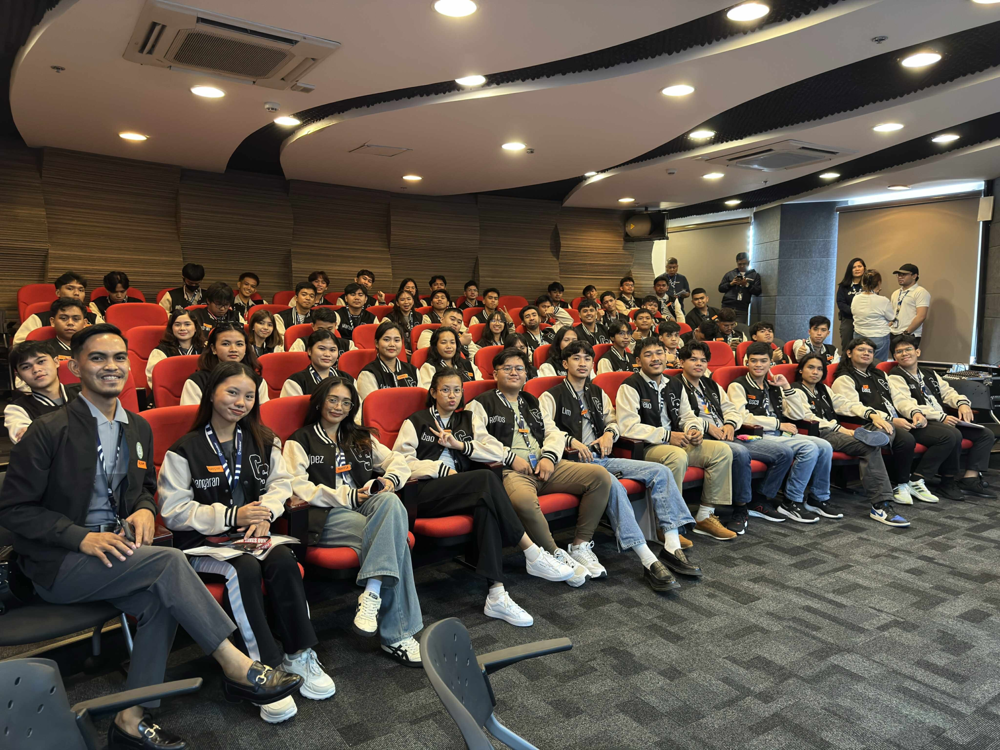
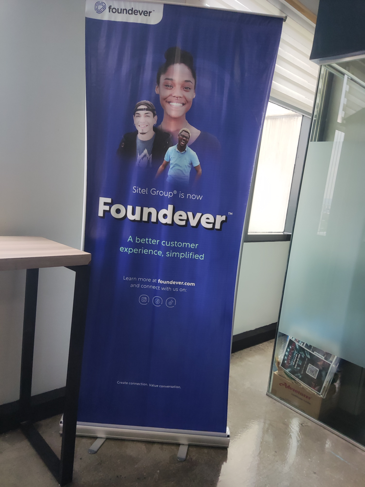
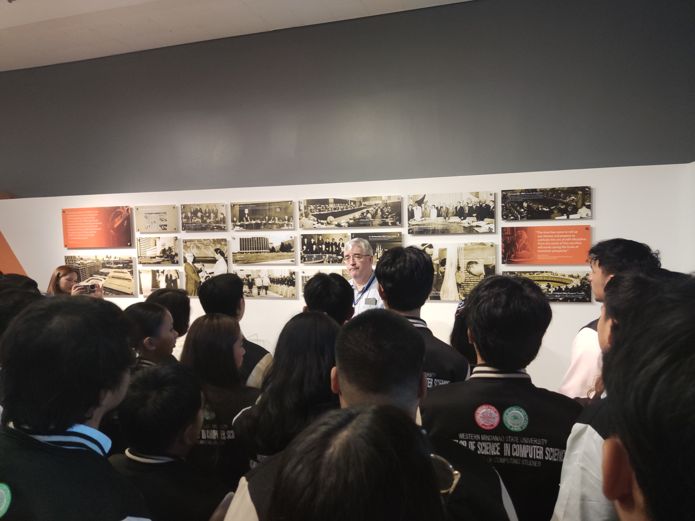
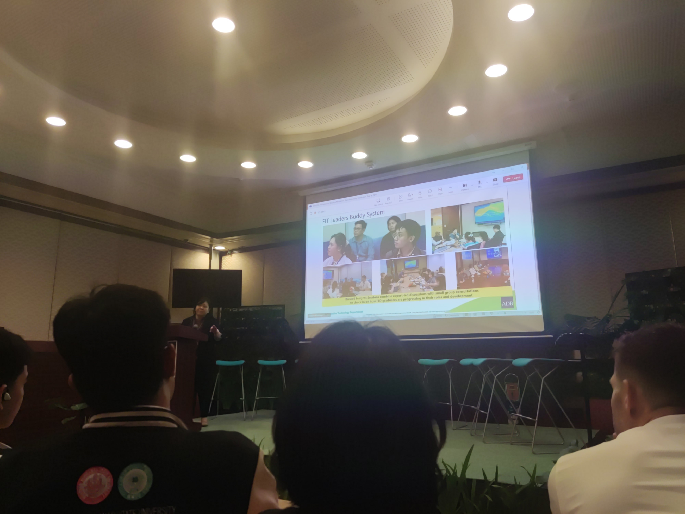
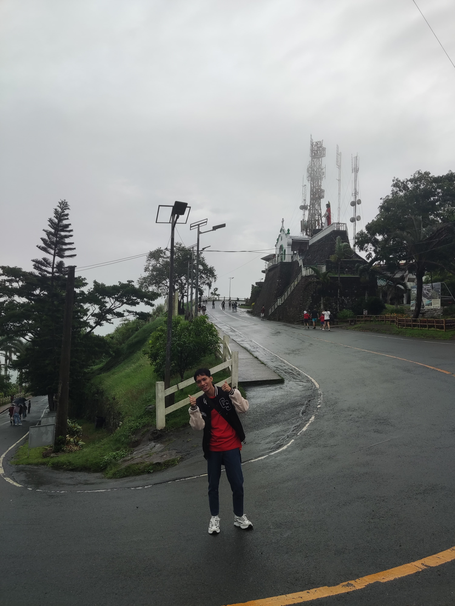
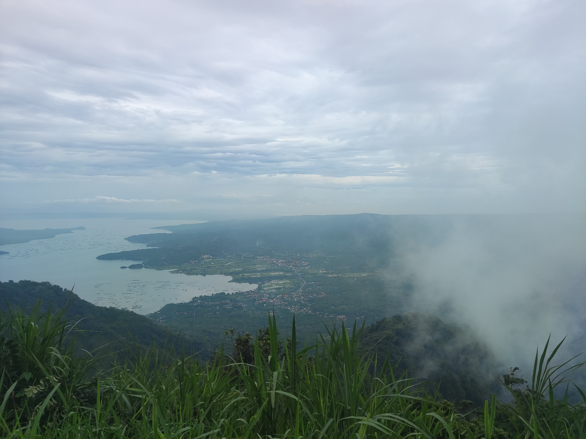

We landed at Ninoy Aquino International Airport (NAIA) Terminal 2 on a Saturday night. I, along with the others, arrived feeling excited and eager for what the next day had to offer. We met our tour guide and had the chance to explore Intramuros Fort Santiago and the Mall of Asia. After that, we checked into our dorm to rest. In the evening, we enjoyed a welcome dinner and shared our expectations for the tour with fellow Computer Science students.
Day 1: Arrival in Manila
Day 2: First Companies To Visit: Foundever and Google
Foundever Experience
Foundever was our first stop, where we learned about their innovative customer service solutions. We were given a tour of their facilities and had the opportunity to interact with their team. One of the highlights was the quote of one of the employee that is "If you really want something, you need stand up, leave the crowd, and get it yourself.". We also had a Q&A session with their employees, who shared valuable insights about working in the tech industry and the skills needed to succeed. We learned about their commitment to employee well-being and the importance of a positive work environment.



Google Philippines Experience
After that, we visited Google Philippines, where we were introduced to their work culture and cutting-edge technologies. I have learned about the failing fast principle, which emphasizes the importance of learning from failures quickly to innovate and improve. We had the chance to explore their office, which was designed to foster creativity and collaboration. The day was filled with insightful discussions and hands-on experiences that broadened our understanding of the tech industry.
Day 3: Second Companies To Visit: Teleperformance and Kollab
Teleperformance Experience
We learned about their customer service solutions and the importance of employee engagement. We were given a tour of their facilities and had the opportunity to interact with their team We also learned about how to increase your chances of being accepted in an interview. Overall, the visit to Teleperformance was an eye-opening experience that highlighted the significance of customer service in the tech industry.
Kollab Experience
Kollab was a truly fascinating company, and I deeply admired its core values. I was pleasantly surprised when one of the high-ranking officials personally served us — a simple act that spoke volumes about their humility and culture. It was genuinely inspiring to witness such a healthy and positive work environment. The team clearly demonstrated their strong commitment to innovation and collaboration. We also had the opportunity to explore their office and speak with some of the employees, gaining valuable insights into their work and experiences. Overall, it was a fruitful and eye-opening visit.
Day 4: Last Companies To Visit: Asian Development Bank (ADB) and Microsourcing
Asian Development Bank (ADB) Experience
Asian Development Bank (ADB) was our first stop on the fourth day, where we learned about their role in promoting economic growth and development in Asia. We had the opportunity to meet with their team and gain insights into their projects and initiatives. The visit provided us with a deeper understanding of the impact of international organizations on regional development and the importance of sustainable practices in the tech industry.


Microsourcing Experience
MicroSourcing offers a wide range of job opportunities, and as long as you can demonstrate your skills and capabilities, you’re highly likely to be hired. They are committed to empowering their employees to become the best version of themselves, encouraging them to push their abilities to the fullest. Overall, MicroSourcing is a growing company that places strong emphasis on both quality and the well-being of its people.
Day 5: Finished Visiting All the Companies. Now off to a new adventure.
The fog at People’s Park in the Sky was incredibly thick, adding a mysterious charm to the place. One amusing sight was the local vendors persistently selling espasol—some visitors ended up buying just to escape their determination! We also rode the Super Viking and the roller coaster multiple times in SkyRanch. It was so much fun, especially since the rides were unlimited. If we had more time, we would’ve gone on the Super Viking again and again!



Day 6: Summer Capital Of The Philippines. Baguio City
The strawberries surprisingly tasted a bit like guava, and a heartwarming encounter with a cat made the moment even more special — though I wasn't able to capture it on camera, they were absolutely adorable. I also tried strawberry taho and strawberry ice cream, which (thankfully!) actually tasted like strawberries — at that point, I think I was just overwhelmed with excitement. As for souvenirs, I bought a hat and a bracelet to remember the trip. We also had the chance to visit the Philippine Military Academy and the serene Bell Church, both of which added depth to the experience.
Day 7: Wandering Adventurers In Baguio
We had some free time to explore the night market, where we enjoyed riding a boat and a cart bike. As we strolled around the area, we treated ourselves to some delicious ice cream and took in the vibrant atmosphere, appreciating the beauty and rich culture surrounding us. It was a refreshing and memorable experience that added a unique charm to our tour.
Day 8: Going Home To Zamboanga

The industry tour had been an incredible learning experience—one that provided us with valuable insights into the tech world and exposed us to a variety of company cultures. We gained practical knowledge about what employers seek and how we can better prepare ourselves for future careers in the field. As we boarded our flight home, I found myself reflecting on everything we had learned and the memories we had made. This educational tour wasn’t just about visiting companies—it was about broadening our perspectives, building lasting connections, and finding renewed inspiration for our future in the tech industry. We returned to Zamboanga with a deeper sense of purpose, fresh motivation, and a clearer vision of the path ahead. The experience has equipped me with insights and knowledge that will undoubtedly shape both my academic journey and professional growth.